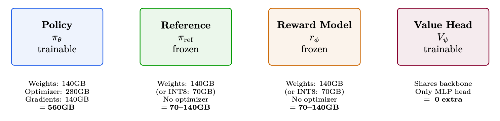
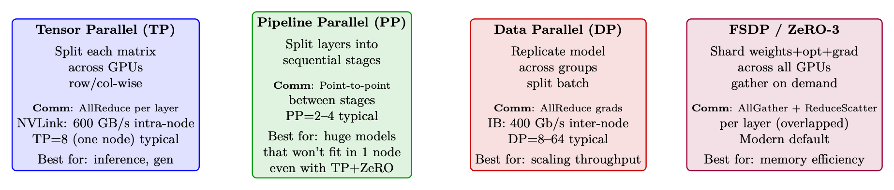
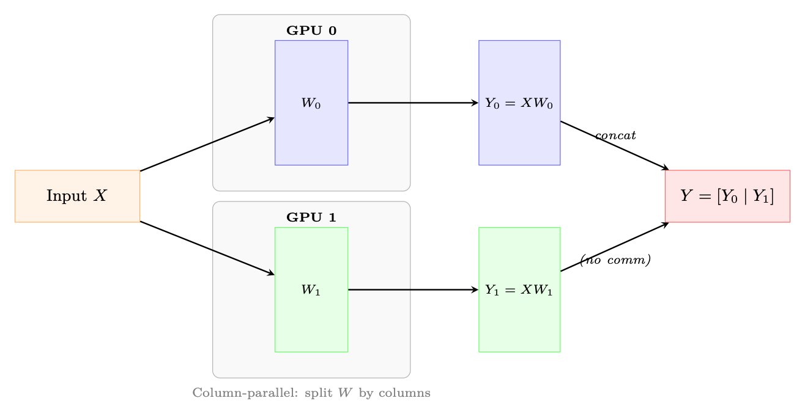
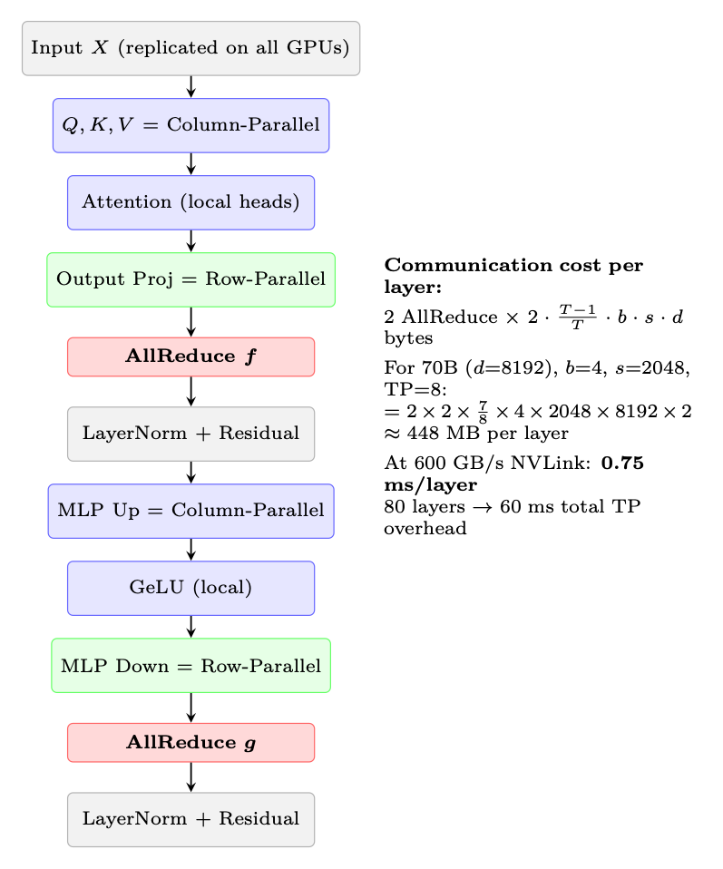
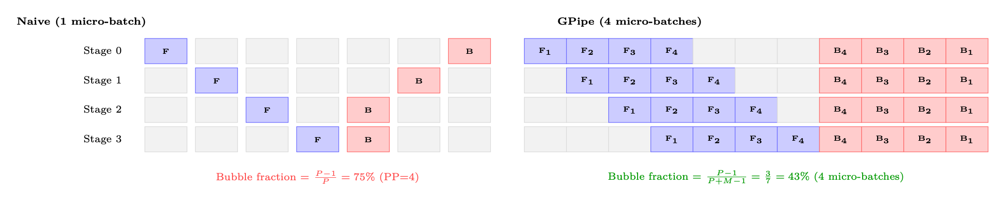
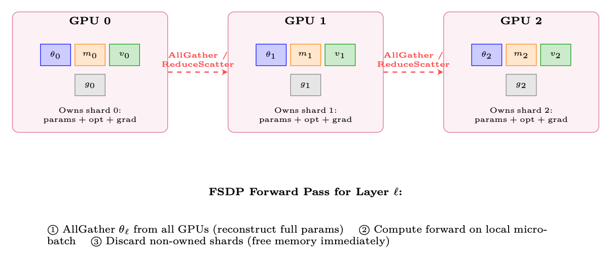
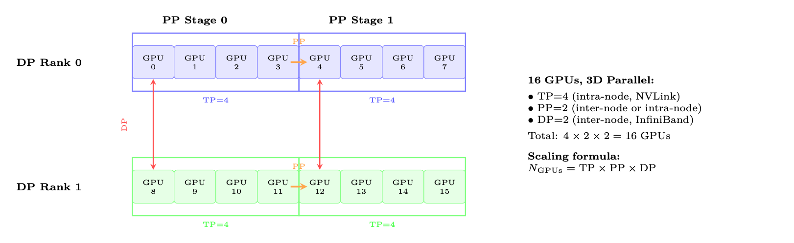
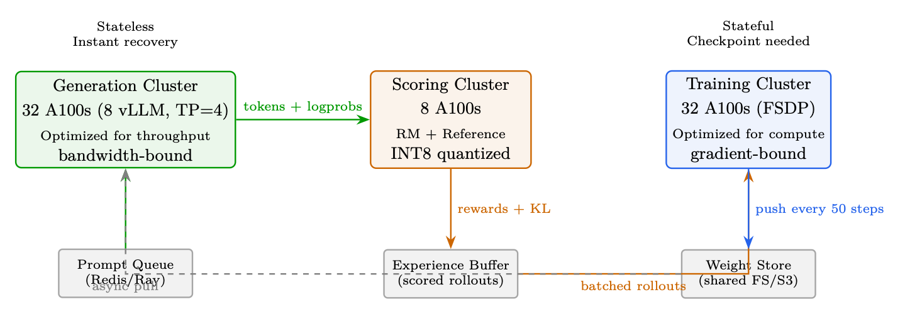

The 4-Model Memory Challenge
原 PDF p.199
系统架构和基础设施 规模化
通过人类反馈的强化学习来训练LLM同样是一项系统工程 挑战，因为它是一种算法挑战。与标准监督微调不同，标准监督微调涉及 单一模型、单一前向-后向传递以及易于理解的缩放——RLHF 需要多个 模型（政策、参考、奖励模型、价值头）同时加载、协调 通过复杂的推出-评分-训练循环，并分布在数十到数百个 GPU。本章涵盖了使大规模 RLHF 训练成为可能的系统级细节： 内存预算、并行策略（数据、张量、流水线、序列及其组合）， 生成瓶颈、解耦架构、权重同步、容错和 生产监控。
4 模型内存挑战
图 11.1：70B PPO 内存预算：RLHF 所需的四种模型及其内存占用。 总计：1470–1560GB。至少 19–20 A100-80GB（原始）。使用 ZeRO-3：适合 8 个节点。
内存预算现实检查 – 70B BF16
政策权重 (BF16) 140GB
FP32 主砝码 280GB Adam 优化器（m + v，FP32） 560GB 渐变 (BF16) 140GB 参考型号 140 GB（或 INT8 中的 70 GB） 奖励模式 140 GB（或 INT8 中的 70 GB） 激活（批次 128，序列 2048） 50–100 GB 用于生成的KV 缓存 20–60 GB 总计 1470–1560 GB
÷ 80 GB/GPU = 最少 19–20 个 A100（无任何并行开销）。

图像：原 PDF p.199Parallelism Strategies in Detail
原 PDF p.200
并行策略详细信息
训练大型语言模型需要将计算分布在许多 GPU 上。有 并行化的基本不同轴，每个轴都有不同的权衡。本节 通过数学公式、图表和实践详细介绍了每种策略 指导。
图 11.2：四种并行策略的概述。生产系统通常结合其中 2-3 个 同时。
数据并行性 (DP) 和分布式数据并行性 (DDP)
数据并行是分布式训练最简单、最常见的形式[205]。每个GPU 保存模型的完整副本，处理不同的小批量，并同步梯度。
Vanilla DP（PyTorch DataParallel）。 一种单进程方法，其中一个“主”GPU 分散输入、收集输出并广播梯度。受 GIL 和 PCIe 带宽限制 主GPU。
分布式数据并行（DDP，DistributedDataParallel）。 多进程：每个GPU 运行自己的进程。梯度在后台通过ring-AllReduce [206]同步，同时 向后计算继续。
图 11.3：DDP：每个 GPU 保存一个完整的模型副本并处理不同的批次。梯度是 通过环 AllReduce 平均，与向后计算重叠。
DDP的主要特性：
• 内存：每个GPU 存储完整模型+优化器+梯度。对于 70B BF16：∼560 GB/GPU— 如果没有内存优化，这是不可能的。
• 通信：每步一个梯度张量的AllReduce。尺寸=模型参数×2 字节（BF16）。全部响铃减少成本：2·N−1
氮 · 每个 GPU 传输的 M 字节。
• 扩展：近线性最多可达∼64 个GPU。除此之外，沟通开始占据主导地位。
• 梯度分桶：DDP 将参数分组到桶中（默认 25 MB）并启动 一旦存储桶的梯度准备好，AllReduce 就会与反向通信重叠 计算。

图像：原 PDF p.200原 PDF p.201
import
torch.distributed as dist
from
torch.nn.parallel
import
DistributedDataParallel
as DDP
dist. init_process_group (backend="nccl")
# NCCL for GPU
communication
model = model.to(local_rank)
model = DDP(model , device_ids =[ local_rank],
gradient_as_bucket_view =True ,
# Memory
optimization
static_graph=True)
# Enable
comm
optimizations
DP vs DDP — 总是使用 DDP
PyTorch 的遗产 DataParallel (DP) 绝不应用于LLM训练:
• 单一进程,受Python GIL的限制
• 所有梯度漏斗通过GPU 0(瓶颈)
• 2-3x连一个节点都比DDP慢
• 规模不能超过一台机器
DDP是最小的平行战略. 对于LLMs >7B,FSDP/ZeRO首选.
11.2.2 (中文(简体) ). 日相平行论(TP)
Tensor并行主义(英语:Megatron-LM style [207])将个人的权重矩阵分出,跨越了GPU. 每个 GPU计算一个部分结果,一个AllReduce结合它们.
Column-Parallel Linear Layer.
权重矩阵 W ∈Rd×h 在 T 上按列分割
GPUs:
W = [W0 | W1 | · · · | WT−1],
Wi ∈Rd×h/T
(11.1)
每个 GPU i 独立计算 Yi = XWi（无通信）。输出沿 隐藏维度。
行并行线性层。 权重矩阵按行分割：W = [W0; W1；。。。 ; WT−1] 其中Wi ∈Rd/T×h。输入 X 也必须被拆分。每个 GPU 计算部分和，然后计算 AllReduce 产生最终输出。
图 11.4：与列平行的线性层（TP=2）。权重按列分割；每个 GPU 计算 XWi 独立。 MLP 将其与行并行层配对以避免冗余的 AllReduce。

图像：原 PDF p.201原 PDF p.202
带 TP 的Transformer块。 在 Transformer 层中，Megatron-LM 按如下方式应用 TP：
-
MLP：第一个线性 (h →4h) 为列并行，第二个线性为行并行 (4h →h)。一 AllReduce 在行并行层之后。
-
注意力：Q、K、V 投影是列并行的（跨 GPU 分头）。输出 投影是行平行的。输出投影后的一个 AllReduce。
-
总计：每个 Transformer 层 2 个 AllReduce（一个用于注意力，一个用于 MLP）。
图 11.5：一个 Transformer 块中的张量并行通信模式。两个 AllReduce 操作 （用红色标记）每层都需要——一个在注意力之后，一个在 MLP 之后。
为什么TP仅限于节点内
每个 Transformer 层需要 2 个 AllReduce 操作（上面标记为 f 和 g）。对于70B 具有 80 层的模型，即每次前向传递 160 次 AllReduce 操作（包括后向传递 320 次）。 在 NVLink 速度 (600 GB/s) 下，每个 AllReduce 耗时 <0.5 毫秒。但通过 InfiniBand (50 GB/s)， 同样的操作需要 ∼4 ms，使得总开销为 160 × 4 = 640 ms——比 计算本身。

图像：原 PDF p.202原 PDF p.203
规则：TP 度≤每个节点的 GPU 数（通常 TP ≤8）。使用 DP/FSDP 进行节点间扩展。
TP学位选择
• TP=1：无张量并行性。模型适合一个 GPU（通常≤13B，BF16）。
• TP=2：最小分割。适合在 2 个 GPU 上进行 13-34B 推理。低开销（<5%）。
• TP=4：34–70B 推理的标准。管理费用 8-12%。
• TP=8：全节点。 70B+ 训练所需。管理费用 12-18%。
• TP>8：跨节点TP。很少使用——仅适用于 200B+ 型号，仅使用 PP 是不够的。 管理费用 30–50%。
重要提示：注意力头的数量必须能被 TP 度整除。适用于 LLaMA-70B (64 头），有效 TP = 1, 2, 4, 8, 16, 32, 64。
序列并行性 (SP)
序列并行[208]解决了张量并行无法单独解决的内存瓶颈： LayerNorm 和 Dropout 层中的激活记忆。
问题。 通过 TP，权重内存被分配到 GPU 上。但是 LayerNorm 和 Dropout 在完全隐藏维度上运行并在每个 GPU 上复制。它们的激活（需要 向后传递）消耗的内存与 b × s × d 成正比——在每个 GPU 上都相同，未减少 TP。
解决方案。 为不需要跨 GPU 通信的操作分割序列维度 阳离子（LayerNorm、Dropout、剩余连接）。每个 GPU 处理序列的一个 s/T 切片 对于这些操作，然后仅在需要的地方收集完整序列（注意力，线性层）。
图 11.6：序列并行通过沿着 序列维度。通信（AllGather/ReduceScatter）取代了标准中使用的 AllReduce TP—传输的总字节数相同，但节省了内存。
SP 通讯是“免费”的 标准TP在每个子层之后使用AllReduce，相当于ReduceScatter + AllGather。 SP 只是对这些原语重新排序：
• 没有 SP 的 TP：AllReduce（=ReduceScatter + AllGather）→所有 GPU 上的数据相同→ 全张量上的 LayerNorm（浪费）。
• TP 与 SP：ReduceScatter →每个 GPU 有 1/T 的序列 →部分的 LayerNorm
张量 → 在下一个 TP 层之前全部收集。
 图像：原 PDF p.203
图像：原 PDF p.203原 PDF p.204
总通讯量是一样的！ SP纯粹是零内存优化 额外的通讯费用。使用 TP 时应始终启用它。
SP 节省的内存（70B 模型，TP=8，batch=4，seq=2048）：
Activation savings = (T −1)×b×s×d×nlayers×2 bytes = 7×4×2048×8192×80×2 ≈59 GB/GPU
(11.2)
流水线并行度 (PP)
流水线并行性按层垂直分割模型，将连续的层组分配给 不同的设备（阶段）。激活按阶段向前流动；梯度向后流动。
泡沫问题。 简单的流水线执行会产生“气泡”——阶段等待时的空闲时间 对于前一阶段的输入或下一阶段的梯度：
图 11.7：流水线气泡比较。左图：具有一个微批次的初始流水线有 75% 的空闲时间。右： M = 4 微批次的 GPipe 显着减少了气泡。当 M ≫P 时，气泡分数接近 零。
气泡分数公式。 对于 P 个流水线阶段和每步 M 个微批次：
中号 （当 M ≫P 时） (11.3)
气泡分数= P−1 P + M −1 ≈P −1
为了保持气泡开销 <10%，需要 M ≥10 · (P −1)。对于 PP=4：至少 30 个微批次。
表11.1：流水线调度策略
时间表 气泡 内存 特点
通用流水线 P−1 M+P−1 M× 激活 简单； 全前锋 那么 所有- 落后 [209] 1F1B P−1 M+P−1 P×激活 交错； 稳态存储器 有界 [210] 交错 1F1B P−1 M·V +P−1 P×激活 虚拟阶段（V）；进一步减少 泡泡 [211] 零气泡 (ZB-H1) ≈0 P×激活 向后分裂为 B 和 W 阶段 [212]
流水线时间表。
1F1B：生产标准 1F1B（一前一后）调度[210]用于大多数生产系统 （Megatron-LM [211]、DeepSpeed [213]）： 预热：前向传递填充流水线（P-1 微批次）。 稳定状态：每个时隙交替进行一前一后。这限制了峰值激活 内存到 P 微批次（相对于 GPipe 的 M）。 冷却：剩余的向后通道会耗尽流水线。 内存优势：GPipe 必须同时存储所有 M 个微批次的激活。 1F1B 仅存储 P 组稳态激活——当 M = 32 但 P = 4 时至关重要。

图像：原 PDF p.204原 PDF p.205
PP 中的通讯。 与TP（AllReduce）不同，PP只需要点对点通信 相邻阶段之间的激活：
Data per transfer = bmicro × s × d × 2 bytes (BF16)
(11.4)
For micro-batch=4, seq=2048, d=8192: 4 × 2048 × 8192 × 2 = 128 MB per transfer. At InfiniBand
50 GB/s: 2.6 ms per transfer—small relative to compute per stage.
负载平衡。 Not all layers have equal compute:
• Embedding layer: Very cheap (lookup table).
• Transformer blocks: Uniform compute.
• 最终LM 头：中等（用于词汇投影的大矩阵乘法）。
为中间级分配更多的Transformer层，为第一级/最后级分配更少的Transformer层以平衡 计算。
完全分片数据并行性 (FSDP / ZeRO-3)
FSDP [214] (PyTorch) 和 ZeRO-3 [213] (DeepSpeed) 解决了固有的内存重复问题 DDP：不是每个 GPU 都保存参数、梯度和优化器状态的完整副本，而是每个 GPU 都保存参数、梯度和优化器状态的完整副本。 GPU 仅拥有 1/N 切片，并在需要时即时重建完整张量。
图 11.8：FSDP 将所有模型状态跨 GPU 分片。每个 GPU 拥有 1/N 的参数、优化器状态、 和梯度。在每层计算之前，通过 AllGather 按需重建完整参数。
FSDP每层执行流程：
- 转发：全部收集参数→计算→丢弃非拥有的分片。
2. Backward: AllGather parameters (again) →compute gradients →ReduceScatter gradients
(each GPU gets its gradient shard) →discard non-owned parameter shards.
- 优化器步骤：每个 GPU 使用其梯度分片仅更新其拥有的分片，并且 优化器状态。
from
functools
import
partial
from
torch.distributed.fsdp
import
FullyShardedDataParallel
as FSDP
from
torch.distributed.fsdp
import
ShardingStrategy , MixedPrecision ,
BackwardPrefetch
from
torch.distributed.fsdp.wrap
import
transformer_auto_wrap_policy
from
transformers.models.llama.modeling_llama
import
LlamaDecoderLayer

图像：原 PDF p.205原 PDF p.206
表 11.2：DDP 与 FSDP/ZeRO 各阶段的内存比较（70B 模型，8 块 GPU）。基线：BF16 参数（140 GB）+ BF16 梯度（140 GB）+ FP32 master+m+v（840 GB）= 每块 GPU 1120 GB。
策略 分片 内存/GPU 通讯
DDP (no sharding)
Nothing
1120 GB ×
AllReduce (gradients only)
ZeRO-1
Optimizer states
385 GB ×
AllReduce (gradients)
ZeRO-2
Optimizer + gradi-
ents
368 GB ×
AllReduce (gradients)
ZeRO-3 / FSDP 一切 140 GB ✓ AllGather +ReduceScatter（每 layer)
# Wrap
model
with FSDP
auto_wrap = partial( transformer_auto_wrap_policy ,
transformer_layer_cls ={ LlamaDecoderLayer })
mp_policy = MixedPrecision(
param_dtype=torch.bfloat16 ,
reduce_dtype=torch.bfloat16 ,
buffer_dtype=torch.bfloat16 ,
)
model = FSDP(
model ,
sharding_strategy = ShardingStrategy .FULL_SHARD ,
# ZeRO -3
mixed_precision =mp_policy ,
auto_wrap_policy =auto_wrap ,
# Wrap each
transformer
layer
use_orig_params =True ,
# Required
for torch.compile
compatibility
limit_all_gathers =True ,
# Bound
peak
memory (1 AllGather in flight at a
time)
forward_prefetch =True ,
# Prefetch
next
layer ’s params
during
current
layer
backward_prefetch = BackwardPrefetch .BACKWARD_PRE ,
# Prefetch
during
backward
)
FSDP通讯量 FSDP 每一步通信的数据量约为 DDP 的 3 倍：
• DDP: 1 AllReduce of gradients = 2M bytes total across ring (where M = model size in 字节）。
• FSDP: 2 AllGather (forward + backward) + 1 ReduceScatter = 3M bytes.
这就是内存与通信的权衡。当出现以下情况时，FSDP 是值得的：(a) 模型不适合 in GPU memory with DDP, or (b) communication is well-overlapped with compute (modern 框架实现 70-90% 的重叠）。
3D 并行性：组合策略
Production systems at scale (70B+) combine TP, PP, and DP/FSDP simultaneously:
生产配方：64 A100-80GB 上 70B（8 个节点）
Intra-node (NVLink 600GB/s): TP=8 for generation, FSDP within node for training.
Inter-node (InfiniBand 400Gb/s): FSDP across nodes (8-way data parallel).
结果：每个 GPU 可容纳 ∼70GB。在前向/后向过程中每层收集的策略权重。
管道并行：仅当模型超过 100B+ 并且不适合 TP+ZeRO 时。增加了复杂性 (bubble overhead 10–20%) and scheduling headaches.
The Generation Bottleneck: Quantitative Analysis
原 PDF p.207
Figure 11.9: 3D parallelism layout for 16 GPUs: TP=4 (within each box, using NVLink), PP=2 (orange
arrows, stages), DP=2 (red arrows, gradient sync). Each dimension exploits a different level of the communi-
cation hierarchy.
决策流程图：
-
该模型适合 1 个 GPU 吗？ →Use DDP.
-
它是否适合使用 FSDP 的 1 个节点？ →使用 FSDP (ZeRO-3)。
-
是否适合 TP+FSDP 的 1 个节点？ →使用TP（节点内）+FSDP（节点间）。
-
还是不合适？ →添加跨节点PP。这是最后的手段。
表 11.3：并行策略比较总结
策略 分裂 通讯 缩放限制 开销 何时使用
顺铂/顺铂 批次 AllReduce（毕业生） ∼64 个 GPU 5–10% 模型适合 1 个 GPU FSDP 参数+选择+梯度 全部聚集+RS 数百个 GPU 10–20% 默认>13B TP 权重矩阵 AllReduce（2/层） 8 个 GPU（1 个节点） 12–18% 大模型推理+训练 SP 激活（序列） Reuses TP comms 与TP相同 约 0% 额外 永远和TP在一起 聚丙烯 层（阶段） 点对点 ∼16级 15–30% 仅限 100B+ 型号
生成瓶颈：定量分析
屋顶线分析：为什么一代是受内存限制的
A100 规格：312 TFLOPS（BF16 Tensor Core）和 2 TB/s HBM 带宽。Roofline 交叉点为 312T/2T = 156 FLOP/字节。 低于 156 FLOP/字节的操作是 内存限制。 自回归生成：对每个 token，都需要读取全部权重（70B 模型约 140GB），并执行 2 × 70B = 每 token 140G FLOPs（batch=1）。算术强度为 140G FLOP / 140GB = 1 FLOP/字节，比 Roofline 交叉点低 156 倍。利用率为 1/156 = 峰值 FLOPS 的 0.6%，GPU 约 99.4% 的时间在等待内存读取。token 速率为 2TB/s / 140GB = 14.3 token/s（单流，batch=1）。 For 512 tokens: 512/14.3 = 35.8 seconds per response (batch=1, TP=1). Batching helps: Batch=64 with TP=4 →reads weights once, generates 64 tokens in parallel. Arithmetic intensity: 64 × 1 = 64 FLOP/byte.更好，但仍低于屋顶线！
表 11.4：70B 模型的生成吞吐量（512 个token，各种配置）
配置 批次 时间/批次 托克/秒/GPU 注释
TP=1，批次=1 36秒 基线，最坏情况 TP=4，批次=1 9秒 gen 的线性 TP 缩放 TP=4，批次=32 15秒 接近最佳的批处理 TP=4，批次=128，vLLM 45秒 连续配料 TP=4，批次=128，INT8 25秒 节省 2 倍带宽

图像：原 PDF p.207Decoupled Architecture: Production Design
原 PDF p.208
优化堆栈（累积加速）：
-
vLLM + PagedAttention [157] (2–4×): Eliminates KV cache fragmentation, enables larger 批次
-
Continuous batching [215] (1.5–2×): Don’t wait for longest sequence;开始新的作为 其他人完成
-
推测解码 [143]（2–3×）：小型草稿模型先提出 5 个 token，大模型在一次前向传递中验证，平均接受 3–4 个。
-
INT8/FP8 weights for gen (2×): Halve bandwidth needs.质量损失最小，因为 我们正在采样（不计算训练的精确logits）
-
CUDA graphs (1.1–1.3×): Eliminate kernel launch overhead for fixed-shape operations
-
Prefix caching (1.5× for shared-prefix prompts): Don’t recompute system prompt KV cache
# Production
vLLM
generation
setup
from vllm
import LLM , SamplingParams
engine = LLM(
model="./ policy_checkpoint ",
tensor_parallel_size =4,
# TP=4 per
instance
gpu_memory_utilization =0.92 ,
# Leave
headroom
for KV cache
max_num_batched_tokens =16384 ,
# Max tokens in flight
max_num_seqs =256,
# Max
concurrent
sequences
dtype="bfloat16",
enable_prefix_caching =True ,
# Cache
system
prompt KV
speculative_model ="./ draft_1B",
# Speculative
decoding
num_speculative_tokens =5,
block_size =16,
# PagedAttention
block
size
swap_space =4,
# GB swap
space for
preemption
)
# Generate
responses
for RLHF
batch
sampling_params = SamplingParams(
temperature =0.7, top_p =0.9,
max_tokens =512 ,
logprobs =1,
# Need log -probs for PPO ratio
calculation
)
outputs = engine.generate(prompts , sampling_params )
# Extract: responses , log_probs
for each
token (needed for PPO/GRPO)
解耦架构：产品设计
DeepSpeed-Chat [216] 和 OpenRLHF [217] 等生产 RLHF 系统使用解耦 将生成、评分和训练分离成独立可扩展集群的架构。
为什么要解耦？
生成受内存带宽限制（需要快速 HBM，浪费计算）。
训练受计算限制（需要张量核心，在反向传播期间浪费带宽）。
相同的硬件无法同时优化两者：如果将所有东西放在一起，要么浪费计算能力 在生成期间或在训练期间浪费带宽。解耦让每个集群都使用最优的 硬件/配置。 实际好处：
• 独立的量表生成和训练
Weight Synchronization Strategies
Memory Optimization Techniques
原 PDF p.209
图 11.10：解耦 RLHF 架构。每个集群都针对其工作负载进行了优化。得分展示 在被训练消耗之前先积累在经验缓冲区中。
• 生成集群是无状态的→微不足道的容错能力
• 可以将生成（步骤 N + 1）与训练（步骤 N）重叠→30–40% 加速
• 不同的量化：INT8 用于生成（带宽），BF16 用于训练（精度）
权重同步策略
策略 陈旧性 带宽 质量影响
同步（每一步） 0 步 140 GB/步 完美但太慢 Periodic (every 50 steps) 平均 25 2.8 GB/步摊销 <2% 质量损失 增量压缩 (INT8) 平均 25 0.4 GB/步 <3% 质量损失 异步流式传输 5–10 个步骤 14 GB/步（背景） <1% 质量损失
Why Staleness is OK for PPO/GRPO
PPO 的裁剪目标是为离策略数据而设计的！剪辑 [1 −ϵ, 1 + ϵ] 限制了影响 的陈旧数据。具有 10-50 个陈旧步骤：
• 策略变化每步约 0.1–1%（使用适当的 LR）
• 超过 50 个步骤：∼5% 的政策漂移
• PPO 夹设计可承受高达 20% 的漂移
• 根据经验：对于 50 步陈旧度，质量损失 <2%
带宽数学：70B BF16 = 140GB。 InfiniBand 400Gb/s = 50GB/s → 2.8 秒内完全同步。 使用增量压缩：<0.5s。异步 = 免费（在后台运行）。
内存优化技术
零阶段 什么被分片 内存/GPU（70B，8 个 GPU）
无（数据并行） 什么都没有（完全复制品） 每个 GPU 560GB（不可能） 泽罗-1 仅优化器状态 175GB 泽罗-2 优化器状态+梯度 105GB ZeRO-3 (FSDP) 优化器+梯度+Pa- 参数 70GB（适合 A100-80GB！）
附加技术：
• 梯度检查点[218]：不存储所有激活；向后期间重新计算 通过。节省约 60% 的激活内存，成本约 33% 的额外计算。选择性：仅检查点 注意力层（内存密集），保留 FFN 激活（计算密集以重新计算）。

图像：原 PDF p.209原 PDF p.210
• 混合精度[219]：BF16 中的转发（2 字节/参数），FP32 中的优化器状态（4 字节） 每个为 m,v)。 FP32 中的主重量用于累积。
• CPU 卸载(ZeRO-Infinity [220])：将优化器状态移至CPU RAM。 50%内存 节省但速度慢 2-3 倍（PCIe 64GB/s 瓶颈）。
• 激活卸载：前进时将激活移至CPU，后退时将激活移至CPU。 只有当记忆力真正至关重要时。
• FlashAttention [7, 82]：O(n) 内存而不是O(n2) 的注意力。 2–4 倍快 + 巨大 长序列节省内存。
FlashAttention 对 RLHF 的影响
为什么 Flash 注意力对于 RLHF 很重要
RLHF 涉及生成长序列（推出），然后对其进行训练。不带闪光灯 注意力：
• 具有 32 个头的 4K token序列仅用于注意力矩阵就需要 ∼4 GB
• 这严重限制了 PPO/GRPO 训练期间的批量大小
• 注意力激活的梯度检查点是昂贵的
闪光注意力：
• 注意力记忆是 O(n) – 由 Q、K、V、O 张量主导
• 使用相同的 GPU 内存可以实现更长的部署（8K–32K token）
• 向后传递根据 Q、K、V 重新计算注意力图块（未存储 n2 矩阵）
• 这是长上下文 RLHF 的关键推动因素（例如推理模型）
Flash 注意力和梯度检查点
FlashAttention 的后向传递根据 Q、K、V（其中 被存储）。这意味着FlashAttention已经实现了一种激活重新计算的形式 为 O(n2) 注意力矩阵。你不需要额外检查注意力层 - 这样做会不必要地重新计算 Q、K、V。
# DeepSpeed ZeRO -3 configuration
for 70B RLHF
training
ds_config = {
"bf16": {"enabled": True},
" zero_optimization ": {
"stage": 3,
"overlap_comm": True ,
# Overlap
communication
with
compute
" contiguous_gradients ": True ,
# Better
memory
layout
" reduce_scatter": True ,
# More
efficient
than
allreduce
" reduce_bucket_size ": 5e7 ,
# 50M params per bucket
" prefetch_bucket_size ": 5e7 ,
# Prefetch
next
bucket
" param_persistence_threshold ": 1e5 ,
# Keep
small
params on all GPUs
" offload_optimizer ": {"device": "cpu", "pin_memory": True},
# CPU
offload
" sub_group_size": 1e9 ,
# Reduce
fragmentation
},
" gradient_accumulation_steps ": 4,
" gradient_clipping ": 1.0,
" train_micro_batch_size_per_gpu ": 2,
" wall_clock_breakdown ": True ,
}
Fault Tolerance at Scale
End-to-End Latency Breakdown
原 PDF p.211
大规模容错
硬件故障现实
单个 GPU MTBF：∼10,000 小时。 512-GPU 集群 MTBF：10000/512 ≈20 小时。但使用软件/网络：4-8 小时 现实地。 多日训练运行：将出现 5-15 次失败。没有容错能力，一次失败就会致命 一切。
生产容错堆栈：
1.检测：NCCL超时（60s）、GPU心跳（10s）、NVML健康监测、ECC错误 计数。
-
检查点：每 50-100 步异步一次。非阻塞（后台线程）。保存：模型 weights, optimizer states (Adam m/v), scheduler state, RNG states, KL coefficient, replay 缓冲区。保留最后 3 个检查点。时间：70B ～30 秒（并行写入 NVMe）。
-
恢复： (a) 生成集群=无状态，只需重启并加载最新权重。 (b) 训练 集群：加载检查点、重建 NCCL 进程组（排除故障节点）、重新分配 FSDP 分片，从上一个检查点恢复。
-
弹性训练：Torch Elastic / Kubernetes 自动缩放。在几分钟内更换故障节点。 暂时使用 N −1 个 GPU 继续训练。
5.预防：GPU健康预筛查（启动前运行GEMM压力测试）。热备件 处于待机状态。冗余网络路径（双轨 InfiniBand）。
端到端延迟细分
图 11.11：没有重叠（整体）。解耦后：gen与训练重叠，有效1.4× 加速。
阶段 时间 (70B) Bound By 优化
Generation (128×512 tok) 30–45秒 内存带宽 vLLM, spec decoding, INT 奖励评分 5-8秒 计算（批处理- 病房） INT8 RM，批量=128
参考日志概率 4-6秒 计算（批处理- 病房） INT8 参考，或 LoRA（免费）
PPO update (4 epochs) 8-12秒 计算（反向传播） FSDP、闪存注意力 体重同步 0–3秒 网络（异步） 增量压缩，异步 总计（整体） 50–75秒 总计（解耦、重叠） 35–50秒 Gen 与 prev tr 重叠
 图像：原 PDF p.211
图像：原 PDF p.211Monitoring and Observability
Network Topology and Communication Patterns
原 PDF p.212
监控和可观察性
RLHF 训练期间要跟踪的关键指标
质量指标（每 10 步记录一次）：
• 平均奖励（应增加然后达到稳定水平）
• KL 与参考值的偏差（应保持 3-10）
• 响应长度分布（注意力长度黑客）
• 熵（应该缓慢减少，而不是崩溃）
系统指标（记录每一步）：
• GPU 利用率（目标：训练期间>80%，生成期间>60%）
• 每个 GPU 的内存水印（在 OOM 发生之前捕获它）
• 生成吞吐量（token/秒，应该稳定）
• 梯度范数（尖峰=不稳定传入）
• NCCL 通信时间（检测网络性能下降）
网络拓扑和通信模式
高效的分布式训练需要了解分层通信结构 连接 GPU。现代集群使用两层架构：超快的节点内链接和较慢的节点内链接 但可扩展的节点间网络。
节点内：NVLink 和 NVSwitch
表 11.5：NVLink 各代及其对 LLM 训练的影响
一代 每个链接的带宽 链接/GPU 总带宽 平台
NVLink 3.0 50GB/秒 600GB/秒 A100（DGX A100） NVLink 4.0 50GB/秒 900GB/秒 H100（DGX H100） NVLink 5.0 100GB/秒 1800GB/秒 B200（DGX B200）
在单个节点（通常是 8 个 GPU）内，NVSwitch 提供全平分带宽 所有 GPU 对。 这意味着任何 GPU 都可以以全 NVLink 速度与任何其他 GPU 进行通信 同时——对于张量并行性至关重要，其中每一层都需要跨所有 8 个层进行 AllReduce GPU。
NVSwitch 与 PCIe 拓扑
使用 NVSwitch (DGX/HGX)：所有 8 个 GPU 以 600–1800 GB/s 的速度全部连接。全部归约 TP 每层需要 ∼0.2ms。 没有 NVSwitch（仅 PCIe 服务器）：GPU 通过 CPU PCIe 根联合体进行通信 速度为 32–64 GB/秒。 8 个 GPU 上的 TP 速度变慢 10-30 倍。切勿在仅 PCIe 上使用 TP>2 系统。
节点间：InfiniBand 和 RoCE
对于跨节点的 FSDP/ZeRO-3 AllGather 和 ReduceScatter 操作，节点间网络 占主导地位。
原 PDF p.213
表 11.6：LLM 训练集群的节点间网络选项
技术 带宽 延迟 注释
InfiniBand NDR 400 GB/秒（50 GB/秒） 1–2 µs 金标准，RDMA，无损 InfiniBand NDR（双轨） 800 GB/秒（100 GB/秒） 1–2 微秒 用于H100集群 罗CE v2 100–400 Gb/秒 2–5 微秒 更便宜，需要 PFC/ECN 调整 Ethernet (TCP) 100–400 Gb/秒 10–50 微秒 不适合 >16 GPU 训练
通信原语及其成本
了解每个集合的使用时间有助于诊断瓶颈：
表 11.7：分布式 LLM 培训中的 NCCL 集体操作
集体 数据已移动 使用者 当
全部归约 2·N−1
氮 · 米 TP、DP 求和梯度或激活 GPU 齐聚 N−1
氮 · 米 FSDP转发 重建全参数张量为 前矩阵相乘 减少分散 N−1
氮 · 米 FSDP落后 分发 渐变 碎片 之后 反向传播 广播 中号 聚丙烯 将激活发送到下一个流水线 舞台 Send/Recv 中号 聚丙烯 点对点 之间 相邻的 阶段
其中 M 是消息大小（字节），N 是参与方数量。
Training Throughput and Model FLOPs Utilization
原 PDF p.214
通信与计算重叠
现代框架（FSDP、DeepSpeed）积极地将通信与计算重叠： 前向传播：当第 i 层计算时，AllGather 预取第 i + 1 层的参数。 第 i 层完成后，其参数立即被丢弃（“转发后释放”）。 向后传递：当第 i 层计算梯度时，ReduceScatter 发送第 i + 1 层的梯度。 如果调整得当，这种重叠会隐藏 70-90% 的通信延迟。 调整旋钮：prefetch_factor（预取前多少层）、reduce_bucket_size （梯度减少的粒度），backward_prefetch（“pre”与“post”向后预取 策略）。
网络拓扑设计
生产集群使用胖树或轨道优化拓扑：
• 胖树：每个级别的完全平分带宽。任何节点都可以与任何其他节点通信 全速。昂贵（许多开关）但具有最大的灵活性。
• 轨道优化：每个节点上的GPU i 连接到同一叶交换机（“rail i”）。全部归约 铁路内价格便宜；跨轨交通费用昂贵。由 Meta 的 RSC 和 Google 的 TPU 使用 豆荚。
• 3D torus / Dragonfly：用于HPC负载（Frontier、Aurora）。拓扑负载作业 放置位置至关重要。
工作安置很重要 在 512-GPU 集群上，随机节点分配可能会因网络拥塞而导致 2-3 倍的速度减慢 -。始终请求连续的节点块。生产调度程序（Slurm、Kubernetes） 应强制局部性：训练作业中的所有节点应位于同一叶子交换机上或在一个叶子交换机内 互相跳跃。
训练吞吐量和模型 FLOP 利用率
衡量训练效率：MFU
模型 FLOP 利用率（MFU）[221] 是训练效率的标准指标：
MFU = 观察到的吞吐量（token/秒）× 每个token的 FLOP 数
峰值硬件 FLOPS (11.5)
对于具有 P 参数、s 序列长度和 b 批量大小的Transformer：
FLOPs per token ≈6P + 12 · nlayers · dmodel · s
(11.6)
The factor of 6 comes from: 2 (multiply-add) × 3 (forward + backward, where backward ≈2×
forward). The second term accounts for attention’s O(s2) cost.
为什么 MFU 随着规模的增大而减小
较大的模型需要更多的并行性，这引入了：
-
通信开销：FSDP 的 AllGather/ReduceScatter（64 个 GPU 时约 10–15%）
-
流水线气泡：PP 在微批次开始/结束时引入空闲时间（∼15–25%， PP=4)
3.辅助模型的内存：Reference/RM取可以容纳更大的GPU 内存 批次
4.负载不平衡：并非所有层都具有相同的计算（嵌入与Transformer块）
原 PDF p.215
表 11.8：跨规模和硬件的 MFU 基准测试
型号 硬件 微量元素单位 token/秒/GPU 配置
LLaMA-7B
8×A100
57%
3,200
FSDP,
FlashAttn,
BF16
LLaMA-13B
16×A100
52%
1,750
FSDP,
FlashAttn,
BF16
LLaMA-70B
64×A100
45%
380
FSDP+TP=8,
FlashAttn
GPT-4 (est.)
10,000+ H100
40–50%
—
3D parallelism
PaLM-540B
6144 TPUv4
46%
—
DP+TP+PP
经验法则：训练目标 MFU > 40%。如果低于 30%，则通过分析进行诊断。
计算最佳批量大小
有效批量大小与硬件利用率以不明显的方式相互作用：
有效批量大小 = micro_batch × grad_accum × DP 度 (11.7)
• 太小：GPU 未充分利用（低算术强度），通信占主导地位。
• 太大：减少每个token的学习量（超过临界批量大小），浪费计算。
• 最佳点：临界批量大小Bcrit，其中梯度噪声等于梯度信号。对于 LLM，Bcrit ∼1-4M token[222]。
特别是对于 RLHF，该批次包含推出（不仅仅是token）：
RLHF 批次 = Nprompts × K Generations × Lavg 响应长度 (11.8)
典型生产值：N = 128 个提示，K = 1–4 代，L = 256–512 个token → 每步 32K–256K token。
分析和瓶颈诊断
关键分析工具及其揭示的内容：
工具 捕获 最适合
火炬.profiler 内核计时、内存 查找缓慢的操作、内存泄漏 NVIDIA Nsight 系统 完整的 GPU 时间线 可视化重叠，内核之间的间隙 nccl_debug=信息 集体尺寸/次数 诊断通信瓶颈 torch.cuda.memory_stats 分配模式 查找碎片、峰值使用情况 DeepSpeed Flops 分析器 每层 FLOP 数 识别负载不平衡 py-spy / 斜角肌 CPU分析 数据加载、分词瓶颈
诊断低 MFU：检查表
1.GPU利用率<80%？ →数据加载瓶颈（检查CPU、I/O）。
-
内核之间的间隙大吗？ →Python 开销、同步点。使用CUDA 图表。
-
沟通>步骤时间的20%？ →降低TP度，增加batch size，检查 网络健康。
4.内存99%？ →无法增加批次。尝试梯度检查点、卸载。
- 生成期间OOM？ →KV 缓存太大。减少 max_seq_len 或批量大小
Cost Analysis and Cloud Deployment
原 PDF p.216
将军
成本分析和云部署
了解 RLHF 训练的经济学对于规划至关重要。
硬件成本比较
表 11.9：RLHF 训练的大约云 GPU 成本（2024-2025 年定价）
图形处理器 按需/小时 现货/小时 内存 使用案例
A100 80GB 2.50–3.50 美元 1.00–1.50 美元 80 GB HBM2e 预算训练，一代 集群 H100 80GB $4.00–6.00 $2.00–3.00 80GB HBM3 生产训练 H200 141GB $6.00–8.00 — 141 GB HBM3e 大背景，更少- GPU 配置 小米300X 192GB $3.50–5.00 1.50–2.50 美元 192GB HBM3 性价比高 改变- 本地人
RLHF 训练成本估算
成本 = Nsteps × Tstep
× NGPU × CGPU/小时 (11.9)
成本示例：70B 型号 RLHF（10K 步）
步骤 10,000
Time per step (decoupled)
45 seconds
Total training time
10000 × 45/3600 = 125 hours
GPUs (generation + training)
64 A100-80GB
Cost per GPU-hour (spot)
$1.20
Total cost
125 × 64 × $1.20 = $9,600
Breakdown by phase:
• 生成集群（32 个 GPU）：4,800 美元（60% 的时间）
• 训练集群（32 个 GPU）：4,800 美元（可能重叠→3,400 美元有效）
• 评分（与一代 GPU 共享）：包含在上面
有重叠：70B 模型的完全 RLHF 对齐的有效成本约为 7,500 美元。
成本优化策略
• 现货/抢占式实例：节省 50–70%。需要强大的检查点（每 5 个保存 分钟）。
• 调整大小：不要使用 H100 进行生成（受内存限制）； A100 实现类似token/$ 供推理。
• 量化推理：用于生成和评分的 INT8/FP8 将 GPU 数量减半 集群。
• 渐进式训练：从用于奖励工程/调试的 8B 智能体模型开始（∼$200）， 然后缩放到70B。
• LoRA 无参考：完全消除参考模型（内存减少 50%）。
Distributed Checkpointing
原 PDF p.217
• 首先较短的序列：从 256→512→1024 token生成的课程可节省 40% 计算。
分布式检查点
在规模上，简单的检查点成为瓶颈。具有优化器状态的 70B 模型需要 每个检查点节省 ∼840 GB（FP32 主权重 + Adam m + v）。
检查点策略
表 11.10：大规模 RLHF 的检查点方法
策略 节省时间 (70B) 存储/控制点 特点
同步（所有等级） 30–60 秒（阻塞） 420GB 简单，摊位训练 异步（后台复制） <1s（非阻塞） 420GB 与下一步重叠 增量（增量） <1秒 5–20 GB 只保存修改过的参数 分片（FSDP 原生） 5-10秒 420 GB 分片 每个等级都会保存其碎片
使用 torch.distributed.checkpoint 进行生产检查点
import
torch.distributed.checkpoint as dcp
from
torch.distributed.checkpoint.state_dict
import
get_state_dict ,
StateDictOptions
# Save: each rank
writes its shard in parallel
state_dict = {"model": get_state_dict (model , options= StateDictOptions (
full_state_dict =False))}
dcp.save(
state_dict=state_dict ,
storage_writer =dcp. FileSystemWriter ("/mnt/checkpoints/step_5000"),
planner=dcp. DefaultSavePlanner (),
# Handles
FSDP
sharding
automatically
)
# Async
保存：非阻塞，在后台运行
thread
future = dcp.async_save(
state_dict=state_dict ,
storage_writer =dcp. FileSystemWriter ("/mnt/checkpoints/step_5000"),
)
# Training
continues
immediately; future.result () blocks
only if needed
RLHF 检查站卫生
RLHF 检查点必须捕获比标准预训练更多的内容：
• 策略模型权重+优化器状态（标准）
• KL系数（β）及其调度状态
• 重放缓冲区内容（用于离策略修正）
• 所有 GPU 的 RNG 状态（再现性）
• 提示迭代器位置（避免重新处理提示）
• 奖励模型版本标签（用于可审计性）
• Wandb/metrics 运行 ID（用于连续记录）
Hardware Selection Guide
Optimizer Configuration for RL Training
原 PDF p.218
硬件选型指南
选择合适的硬件取决于模型大小、预算和训练阶段。
表 11.11：按模型规模和训练阶段划分的硬件建议
型号尺寸 训练阶段 推荐 配置
≤7B SFT+RLHF 1–2× A100 单节点，无需并行 7–13B SFT+RLHF 4–8× A100 FSDP，发电机可选TP=2 13–34B SFT+RLHF 8–16× A100/H100 一代 FSDP + TP=4 70B RLHF（完整） 32–64× A100/H100 解耦，FSDP + TP=8 70B RLHF (LoRA) 8–16× A100/H100 无参考模型，LoRA 适配器
100B RLHF 128+×H100 3D并行度（TP+PP+DP）
H100 与 A100：什么时候值得升级？
H100 提供：
• ∼1.6× 峰值 FLOPS（具有稀疏性的 BF16 为 989 与 624 TFLOPS；没有稀疏性的 BF16 为 495 与 312） 稀疏性）
• ∼2× 内存带宽（3.35 与 2.0 TB/s）
• FP8 支持（额外 2 倍用于推理）
• NVLink 4.0（900 与 600 GB/秒）
对于训练：端到端速度提高 ∼1.8–2.2 倍（FP8 支持和更高的带宽放大了原始数据） FLOPS 优势）。 对于生成：快 ∼1.7×（带宽限制，因此 2× BW ≈1.7× 吞吐量（带开销））。 性价比：以 1.5 倍的价格，H100 几乎总是具有更高的训练价值。对于 仅推理（生成集群），现货定价的 A100 可能更具成本效益。
强化学习训练的优化器配置
与预训练相比，RL 训练（PPO、GRPO、DPO）对优化器提出了独特的要求 或 SFT。损失情况是非平稳的（政策改变了生成的数据），梯度 噪音更大（奖励信号方差），训练更容易出现灾难性遗忘或奖励 黑客攻击。本节整合了 RL 特定的优化器指南，使用 AdamW [80] 作为默认值 优化器。
为什么 RL 需要不同的优化器设置
RL 与 SFT 优化 – 主要区别
• 非平稳数据分布：与数据集固定的 SFT 不同，RL 生成 每次迭代都会推出新的数据分布随策略而变化。
• 高梯度方差：奖励信号稀疏且有噪声；梯度有更高的 整理数据上的方差比交叉熵。
• 需要较小的更新：政策必须保持接近参考模型（KL 约束），因此学习率比 SFT 小 10-100 倍。
• 无权重衰减：正则化来自KL 惩罚，而不是权重衰减。添加 WD 位于顶部可以对抗 KL 约束。
• 更短的预热：RL 从收敛的 SFT 检查点开始——优化器状态需要 最少的热身。
原 PDF p.219
RL方法推荐的超参数
Table 11.12:
强化学习训练阶段的优化器设置。
All use β1 = 0.9, β2 = 0.95, ϵ = 10−8,
max_grad_norm=1.0, BF16.
方法 优化器 LR 西数 热身 时间表
数据保护组织 亚当·W 5e-7 50步 常数或线性 PPO（政策） 亚当·W 1e-6 20步 常数 PPO（批评家） 亚当·W 1e-6 20步 常数 GRPO 亚当·W 1e-6 20步 常数
为什么 RL 需要固定时间表？
余弦和线性衰减计划假设固定的训练范围并且单调递减 损失。强化学习训练两者都没有：奖励可能会达到稳定、峰值或不可预测的波动。一个常数 LR（短暂预热后）使优化器在整个训练过程中保持响应。如果你必须腐烂， 使用非常温和的线性计划和较高的最小 LR 比率 (≥0.5)。
RL 的 Beta-2 = 0.95：更快的适应
默认 Adam β2 = 0.999 为第二时刻提供了非常长的记忆（∼1000 步有效 窗口）。在强化学习训练中，随着策略的发展，损失情况会迅速变化——梯度 与 1000 步前的差异无关紧要。使用 β2 = 0.95 将窗口缩短至 ∼20 步，使得 自适应学习率可以快速响应变化的梯度统计数据。
当 beta2 = 0.95 时会造成伤害
对于非常小的批量（例如，在线 RL 中的批量 = 1），β2 = 0.95 可以使二阶矩 估计太吵了。在此方案中，使用 β2 = 0.99 作为折衷，或增加有效批次 通过梯度累积的大小。
RL 的混合精度：FP32 主权重至关重要
强化学习训练对数值精度特别敏感：
• 梯度噪声更大——小的更新必须通过多个步骤准确累积
• 学习率非常小（10−6–10−7），使得 Δθ ≪θ
• BF16 尾数（7 位 ≈0.8% 相对精度）无法表示 10−6 幅度的更新
相对于 100 级的权重
始终使用 FP32 主重量进行 RL 训练。仅 BF16 训练（无 FP32 副本） 在 100-500 步后，可靠地导致 PPO/GRPO 的奖励崩溃。
梯度裁剪对于强化学习至关重要
在 PPO 和 GRPO 中，奖励信号可能变化很大，尤其是在训练早期。单个 错误的批次可能会产生范数 > 100 的梯度，这会完全破坏模型权重。 max_grad_norm=1.0 是标准设置。对于 SFT，削波不太重要，但仍然推荐。
切勿禁用 RL 的梯度裁剪
与梯度范数通常稳定（0.1-1.0 范围）的 SFT 不同，RL 梯度是尖峰的 因为：（1）奖励方差通过策略梯度传播，（2）罕见的高奖励 轨迹会产生过大的更新，并且 (3) KL 惩罚项可以产生大梯度 当政策出现偏差时。 ∥∇∥> 50 的单个未裁剪步骤可以撤消数百次训练 步骤。
原 PDF p.220
诊断强化学习训练的不稳定性
强化学习优化的危险信号和修复
症状 可能的原因和修复
奖励先提高然后崩溃 LR 太高或 KL 系数太低。将 LR 减少 2–5 倍或 增加βKL。 梯度范数始终处于剪辑阈值 更新太激进了。减少 LR（削波意味着您 每一步都会丢失梯度方向信息）。 KL 散度爆炸（>15 nat） LR太高了。减少 10 倍或添加自适应 KL 惩罚。 奖励停留在基线水平 LR太低，或者奖励模型信号低。尝试更高 2–5 倍 LR。检查奖励模型校准。 100 多个步骤后损失 NaN FP32 主权重缺失，或梯度标准溢出。启用 FP32主砝码；验证 BF16 模式。
Hugging Face TRL 强化学习配置
TRL 库 [176] 提供 PPO、DPO 和其他 RL 的生产就绪实现 LLM 的方法。
from trl import
PPO 配置 , PPO 训练器 , DPO 配置 , DPO 训练器
# --- PPO
Configuration
---
ppo_config = PPOConfig(
# Optimizer (AdamW
with RL -specific
settings)
learning_rate =1e-6,
# 10 -100x smaller
than SFT
# PPO -specific
ppo_epochs =4,
# mini -batch
updates
per
rollout
mini_batch_size =16,
batch_size =64,
# rollout
batch
size
# Gradient
control
max_grad_norm =1.0,
# KL penalty (replaces
weight
decay as regularizer)
init_kl_coef =0.2,
# initial KL penalty
coefficient
adap_kl_ctrl=True ,
# adaptive KL targeting
target_kl =6.0,
# target KL divergence
# Mixed
precision
bf16=True ,
# BF16 compute , FP32
master
weights
)
ppo_trainer = PPOTrainer(
model=model ,
ref_model=ref_model ,
config=ppo_config ,
tokenizer=tokenizer ,
dataset=dataset ,
)
# --- DPO
Configuration
---
dpo_config = DPOConfig(
output_dir="./ dpo_output",
# Optimizer
learning_rate =5e-7,
# even
smaller
than PPO
optim="adamw_torch",
adam_beta1 =0.9,
adam_beta2 =0.95 ,
# shorter
memory for RL
weight_decay =0.0,
# no WD -- KL provides
regularization
＃ 日程
原 PDF p.221
lr_scheduler_type =" constant_with_warmup ",
warmup_steps =50,
# Gradient
control
max_grad_norm =1.0,
# DPO -specific
beta =0.1,
# KL constraint
strength
loss_type="sigmoid",
# standard
DPO loss
# Mixed
precision
bf16=True ,
# Training
num_train_epochs =1,
# DPO
typically 1 epoch
per_device_train_batch_size =4,
gradient_accumulation_steps =8,
)
dpo_trainer = DPOTrainer(
model=model ,
ref_model=ref_model ,
args=dpo_config ,
train_dataset=dataset ,
tokenizer=tokenizer ,
)
dpo_trainer.train ()
清单 11.1：使用 TRL 完成 PPO 和 DPO 优化器配置。
MoE 强化学习训练的注意力事项
教育部 RLHF 专家混合 (MoE) 模型 [109] 越来越多地用于 RLHF：
• 优势：在相同的计算成本下，容量增加 3-4 倍。更适合奖励模型（更多 判断能力）。
• 挑战：专家并行性需要全面的通信（token通过 GPU）。这与流水线并行性相冲突。
• GRPO 与 MoE：效果良好，因为发电成本主要由有效参数（而不是 总参数）。
• LoRA for MoE：只能将 LoRA 应用于路由器+共享层，或应用于所有专家 （昂贵）。
强化学习优化器的咒语
对于 RL 微调：小 LR、无权重衰减、恒定调度、FP32 主权重、 激进的剪裁。让 KL 惩罚来处理正则化——优化器的工作就是 遵循政策梯度而不超调。